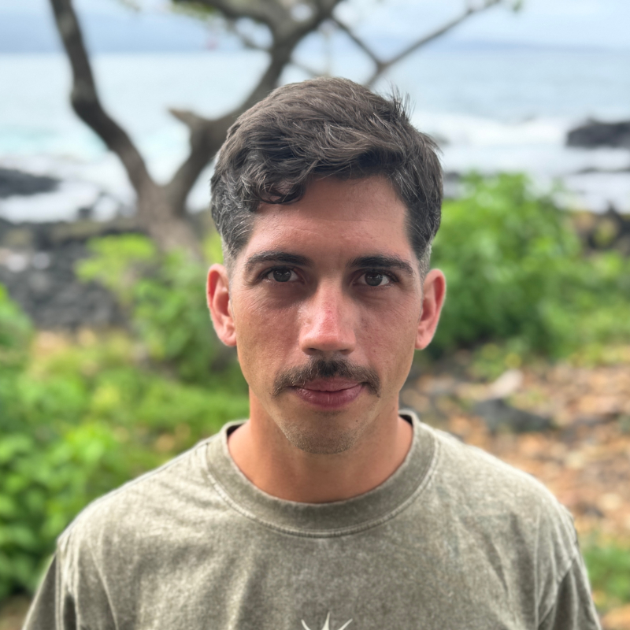

19.9083° N 155.0916° W
Marine Scientist · Geospatial Analyst · Big Island Field Operator

Big Island of Hawaiʻi · 2024
About
I am a marine scientist and geospatial analyst based on the Big Island of Hawaiʻi, specializing in acoustic telemetry, remote sensing, and coastal ecosystem monitoring. My work sits at the intersection of field operations and computational analysis — translating raw sensor data into actionable insights for fisheries management and conservation science.
I hold a B.S. in Marine Science from the University of Hawaiʻi at Hilo (2025) and completed a NOAA Hollings Internship at the Channel Islands National Marine Sanctuary, where I processed an 11-year longitudinal acoustic telemetry dataset tracking seven threatened and vulnerable marine predator species. My thesis modeled fish community dynamics across the California Current's Point Conception biogeographic break using multi-decadal climate and survey data.
I am an NSF Graduate Research Fellowship Program Honorable Mention recipient (2025) and am actively developing a research agenda focused on closing the data gap in east Big Island coastal monitoring through integrated acoustic and remote sensing infrastructure.
Research & Portfolio
Climate Modeling · Fisheries
Evaluated how multi-variable environmental shifts — SST, wind velocity, chlorophyll-a — alter fish community structures across the Point Conception biogeographic break in the California Current ecosystem. Developed GLMs on >20 years of subtidal survey data, quantifying warm- vs. cool-affinity species density responses. Models optimized for integration with GFDL-ESM2M and ROMS-NEMUCSC to forecast ecological shifts through 2100.
→ github: thesisAcoustic Telemetry · CINMS
Assessed movement, connectivity, and habitat fidelity of 7 threatened and vulnerable marine predator species within the Channel Islands National Marine Sanctuary. Processed an 11-year longitudinal dataset across 277 transmitters and 13 Innovasea receivers. Identified critical aggregation sites for White Sharks, Giant Sea Bass, and Leopard Sharks. Foundation for a pending NOAA Technical Conservation Series report.
→ github: WCO_Tag_AnalysisGeospatial · Water Quality
Mapped Enterococcus faecalis concentrations across 12 coastal sites in West Hawaiʻi to identify high-risk zones requiring wastewater infrastructure upgrades. Executed spatial correlations between fecal indicator bacteria and environmental parameters against legacy cesspool density. Identified four zones temporarily exceeding state health standards. Supported a published inter-agency mitigation project with the County of Hawaiʻi and DLNR.
→ publication: hdl.handle.netLive Applications
Interactive map of 235 PIRAT acoustic receiver stations across the Hawaiian
Archipelago with 6 proposed east Big Island deployment sites. Built with the
GEE JavaScript API and live ui.Panel deployment.
Multi-variable habitat suitability index for the Southern California Bight, built in Google Earth Engine. Combines SST, chlorophyll-a, and bathymetry into a composite 0–1 suitability score with an interactive deployable UI panel.
→ Launch AppSource Code
Combined SST, chlorophyll-a, and bathymetry map showing the interaction between productivity and upwelling around Point Conception.
JavaScript · GEER-based acoustic telemetry pipeline for CINMS multi-species predator movement data. 11 years · 277 transmitters · QA/QC automation.
R · InnovaseaLive GEE application mapping the Pacific Islands Regional Acoustic Telemetry network across the Hawaiian Archipelago with proposed deployment sites.
JavaScript · GEEPresentations & Contributions
Fish Assemblages in Wind-Driven Upwelling Zones in California: A Long-Term Perspective
AFS Inaugural Pacific Islands Chapter Meeting — Honolulu, Hawaiʻi
Fidelity and Flux: Comparative Analysis of Marine Predator Residency
AAUS Diving for Science Symposium — Seattle, Washington
Fidelity and Flux: Comparative Analysis of Marine Predator Residency
Western Society of Naturalists 105th Annual Meeting — Portland, Oregon
Fidelity and Flux: Comparative Analysis of Marine Predator Residency
NOAA Office of Education Science and Education Symposium — Silver Spring, Maryland
Investigating Environmental Health and Sustainable Wastewater Infrastructure in Kailua-Kona, Hawaiʻi
UH Marine Option Program Symposium — Hilo & Kahului, Hawaiʻi
Satellite and Acoustic Telemetry Reveals Deep Dives and Long Range Movements of the Bat Ray (Myliobatis californica)
Contributing author · Speaker: Dr. Ryan Freedman
Predicting Sea Level Rise Impacts on Coastal Wastewater Infrastructure and Water Quality for Adaptive Planning and Increased Coastal Habitat Resilience
Published — UH Hilo · Mentors: Dr. Tracy Wiegner, Dr. Steven Colbert, Ihilani Kamau
hdl.handle.net/10790/43924
Curriculum Vitae
Education
Bachelor of Science in Marine Science
University of Hawaiʻi at Hilo
Associate of Science
Pikes Peak Community College, Colorado Springs
Honors & Awards
NSF Graduate Research Fellowship Program — Honorable Mention
National Science Foundation
Ernest F. Hollings Scholarship
National Oceanic and Atmospheric Administration
President, Marine Technology Society — UH Hilo Chapter
Research Experience
Modeling Fish Community Structure in Upwelling Driven Systems
UH Hilo Senior Thesis Capstone
Apex and Mesopredator Habitat Fidelity and Movement Analysis
NOAA Hollings Internship — Channel Islands National Marine Sanctuary
Kona Coast Water Quality Assessment Project
Marine Option Program — UH Hilo
Work Experience
Ocean Guide
Hilo Ocean Adventures — Hilo, Hawaiʻi
Pelagic Methods and Analysis — Field Lab Assistant
UH Hilo Marine Science Department
Instructional / Research Assistant
UH Hilo Boat Program
Technical Skills
DATA ANALYSIS & SOFTWARE
FIELD & MARINE OPERATIONS
CERTIFICATIONS
Consulting
End-to-end field and analytical services for marine and coastal research programs operating in Hawaiʻi. Based on the Big Island.
Scientific Field Services & Logistics
End-to-end planning and execution of marine and coastal field programs, including vessel coordination, equipment mobilization, and on-site safety management.
Field Sampling & Data Collection
Acoustic receiver deployment and retrieval, water quality profiling, biological surveys, and structured data collection protocols for regulatory and research programs.
Geospatial & Scientific Analysis
Remote sensing, spatial data integration, and statistical modeling delivered through ArcGIS Pro, Google Earth Engine, and reproducible R and Python workflows.
Contact
Available for federal science positions, research collaborations, and consulting engagements on the Big Island of Hawaiʻi or remote.
I am actively seeking federal science positions with NOAA and USGS, as well as remote geospatial and data science roles. A federal-format resume is available upon request. For academic collaborations and graduate research inquiries, please reach out directly.
For field services, data analysis, and scientific logistics in Hawaiʻi, contact Moana Consulting LLC at morgan@moanasci.com or visit moanasci.com.